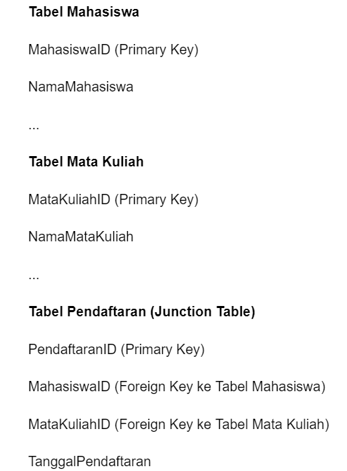

Hubungan Entitas
Dalam database relasional, hubungan antara entitas atau tabel dibentuk melalui penggunaan kunci asing (foreign key). Konsep hubungan ini adalah salah satu aspek paling fundamental dalam desain dan pemrograman database. Hubungan ini memungkinkan Anda untuk mengaitkan informasi antara tabel yang berbeda, sehingga data dapat diambil dan digunakan dengan efisien.
Ada beberapa jenis hubungan dalam database relasional, di antaranya:
- One-to-One (1:1): Hubungan ini terjadi ketika satu baris dalam tabel pertama terhubung dengan satu baris dalam tabel kedua. Contohnya, hubungan antara tabel "Pegawai" dan "Detail Pegawai," di mana setiap pegawai hanya memiliki satu detail pegawai.
- One-to-Many (1:N): Hubungan ini terjadi ketika satu baris dalam tabel pertama dapat memiliki banyak baris yang sesuai dalam tabel kedua, tetapi setiap baris dalam tabel kedua hanya terhubung dengan satu baris dalam tabel pertama. Misalnya, hubungan antara tabel "Kategori" dan "Produk," di mana setiap kategori memiliki banyak produk, tetapi setiap produk hanya termasuk dalam satu kategori.
- Many-to-One (N:1): Ini adalah kebalikan dari One-to-Many, di mana banyak baris dalam tabel pertama dapat terhubung dengan satu baris dalam tabel kedua. Contohnya, hubungan antara tabel "Karyawan" dan "Manajer," di mana banyak karyawan dapat memiliki satu manajer.
- Many-to-Many (N:N): Hubungan ini terjadi ketika banyak baris dalam satu tabel dapat terhubung dengan banyak baris dalam tabel lain. Biasanya, hubungan ini diimplementasikan dengan menggunakan tabel perantara (junction table) yang menghubungkan kedua tabel utama. Contohnya, hubungan antara tabel "Mahasiswa" dan "Mata Kuliah," di mana banyak mahasiswa dapat mengambil banyak mata kuliah, dan sebaliknya.
Penggunaan kunci asing (foreign key) adalah elemen penting dalam menjaga integritas data dalam database relasional. Mereka memungkinkan Anda untuk menghubungkan data dengan cara yang bermakna, menjadikan database relasional salah satu alat yang sangat efisien untuk mengelola dan mengakses data.
1. Relasi Banyak ke Banyak (M to M)
Relasi banyak-ke-banyak (N:N) adalah jenis hubungan dalam database relasional di mana banyak baris dalam satu tabel dapat terhubung dengan banyak baris dalam tabel lain, dan sebaliknya. Misalnya, pertimbangkan contoh hubungan antara entitas "Mahasiswa" dan "Mata Kuliah" dalam sebuah universitas. Banyak mahasiswa dapat mengambil banyak mata kuliah, dan setiap mata kuliah dapat diambil oleh banyak mahasiswa.
Untuk mengimplementasikan relasi banyak-ke-banyak dalam database relasional, Anda biasanya menggunakan tabel perantara atau tabel jembatan yang disebut "tabel penugasan" atau "junction table." Tabel ini digunakan untuk mencatat keterhubungan antara dua entitas yang memiliki hubungan N:N. Dalam contoh di atas, kita dapat memiliki tabel perantara yang disebut "Pendaftaran" atau "Enrollments."
Berikut adalah contoh struktur tabel untuk hubungan N:N antara Mahasiswa dan Mata Kuliah.

Dalam tabel Pendaftaran, setiap baris akan mencatat fakta bahwa seorang mahasiswa tertentu telah mendaftar untuk mata kuliah tertentu pada tanggal tertentu. Dengan demikian, hubungan N:N antara mahasiswa dan mata kuliah diimplementasikan melalui tabel Pendaftaran.
Ini memungkinkan Anda untuk mengambil informasi seperti:
- Mahasiswa mana yang mengambil mata kuliah tertentu.
- Mata kuliah apa yang diambil oleh seorang mahasiswa tertentu.
- Tanggal pendaftaran seorang mahasiswa untuk mata kuliah tertentu, dan sebagainya.
Dengan menggunakan tabel perantara, Anda dapat mengelola hubungan banyak-ke-banyak dengan baik dalam database relasional, menjadikan sistem ini fleksibel untuk mengatasi situasi di mana entitas memiliki hubungan yang kompleks dan tidak terbatas pada satu lawan satu.
2. Pelacakan Perubahan Database Relasional
- Pertama-tama, untuk mendefinisikan studi kasus pelacakan perubahan data pada database relasional, Anda perlu memahami konsep dasar database relasional. Ini mencakup tabel, kolom, kunci primer, kunci asing, dan cara hubungan antartabel diatur. Dalam konteks pelacakan perubahan data, penting untuk memahami bagaimana data disimpan, diakses, dan diubah dalam database tersebut.
- Setelah memahami dasar-dasar database relasional, langkah selanjutnya adalah mendefinisikan studi kasus pelacakan perubahan data. Ini dapat melibatkan mengidentifikasi entitas atau objek dalam database yang perlu dipantau perubahannya, seperti pelanggan, pesanan, atau produk. Selain itu, Anda perlu menentukan jenis perubahan apa yang harus dilacak, seperti penambahan, penghapusan, atau pembaruan data.
- Untuk memahami pelacakan perubahan data, Anda dapat mempertimbangkan penggunaan teknologi seperti log transaksi atau mekanisme audit di dalam database. Log transaksi akan mencatat setiap perubahan yang terjadi dalam database, termasuk waktu, pengguna yang melakukan perubahan, dan detail perubahan itu sendiri.
- Kemudian, Anda dapat menjelaskan berbagai metode dan alat yang dapat digunakan untuk menyelesaikan studi kasus ini. Beberapa pilihan mungkin termasuk penggunaan trigger, prosedur penyimpanan, atau bahkan solusi pihak ketiga yang dirancang khusus untuk pelacakan perubahan data.
- Selain itu, Anda dapat membagikan contoh implementasi dari studi kasus pelacakan perubahan data yang telah berhasil dilakukan dalam dunia nyata. Ini akan membantu mahasiswa Anda memahami bagaimana konsep-konsep yang telah Anda jelaskan dapat diterapkan dalam situasi praktis.
3. Normalisasi dan Aturan Bisnis
a. Normalisasi:
Normalisasi adalah proses desain database yang bertujuan untuk mengorganisasi data agar tetap konsisten, efisien, dan menghindari redundansi. Ini dilakukan dengan membagi data ke dalam tabel-tabel yang lebih kecil dan saling berhubungan. Ada beberapa bentuk normalisasi, seperti 1NF, 2NF, 3NF, dan seterusnya, yang memiliki aturan tertentu yang harus diikuti. Sebagai dosen, Anda dapat menjelaskan setiap tingkat normalisasi dan memberikan contoh nyata untuk setiap tingkat.
Contoh: Jika Anda memiliki tabel peminjaman buku di perpustakaan, Anda dapat menunjukkan bagaimana normalisasi akan memisahkan data peminjam, data buku, dan data peminjaman menjadi tabel-tabel terpisah, menghindari duplikasi informasi.
b. Aturan Bisnis
Aturan bisnis dalam database relasional adalah pedoman atau peraturan yang mengatur bagaimana data harus dimasukkan, disimpan, dan diakses dalam database berdasarkan kebutuhan bisnis perusahaan. Ini mencakup aturan tentang kebijakan keamanan, privasi data, validasi data, dan integritas data.
Contoh: Dalam konteks database perpustakaan, aturan bisnis mungkin mencakup bahwa hanya pustakawan yang memiliki izin untuk menghapus data buku dari database, atau bahwa tanggal pengembalian harus selalu lebih besar dari tanggal peminjaman.
c. Integrasi Normalisasi dan Aturan Bisnis:
Penting untuk mengintegrasikan normalisasi dan aturan bisnis dalam desain database. Anda dapat menjelaskan bagaimana normalisasi membantu dalam memenuhi aturan bisnis dengan memastikan data yang akurat, konsisten, dan aman. Misalnya, normalisasi dapat membantu dalam menerapkan aturan bahwa data peminjam hanya disimpan dalam satu tempat, sehingga menghindari kesalahan atau inkonsistensi.
4. Pemodelan Data
Konsep Dasar Pemodelan Data:
- Jelaskan konsep dasar seperti entitas, atribut, relasi, dan kunci dalam pemodelan data.
- Ajarkan konsep penting seperti normalisasi untuk mengurangi redundansi data dan menjaga integritas.
Diagram Entitas-Relasi (ERD)
- Ajarkan cara membuat ERD sebagai alat visual untuk menggambarkan struktur data dan hubungan antar-entitas.
- Demonstrasikan bagaimana menambahkan entitas, atribut, dan relasi dalam ERD.
Atribut dan Tipe Data:
- Jelaskan beragam tipe data yang digunakan dalam database (misalnya, string, angka, tanggal) dan bagaimana memilih tipe data yang sesuai untuk setiap atribut.
- Bahas validasi data dan konstrain, seperti kunci utama (primary key) dan kunci asing (foreign key).
Normalisasi:
- Terangkan konsep normalisasi dan mengapa itu penting.
- Ajarkan langkah-langkah normalisasi dari tingkat pertama (1NF) hingga tingkat lebih tinggi (misalnya, 3NF atau BCNF).
- Berikan contoh kasus untuk membantu pemahaman
Studi Kasus
- Terapkan pemodelan data dalam sebuah studi kasus nyata yang relevan, seperti sistem perpustakaan, manajemen inventaris, atau sistem penjualan.
- Tunjukkan bagaimana merancang struktur database dengan ERD dan bagaimana mengimplementasikannya dengan SQL.
Alat Pemodelan
- Perkenalkan alat-alat pemodelan data yang umum digunakan seperti Microsoft Visio, MySQL Workbench, atau alat pemodelan data open source lainnya.
- Berikan panduan langkah-demi-langkah tentang cara menggunakan alat-alat ini untuk memodelkan data.
Integritas Referensial dan Aturan Bisnis:
- Jelaskan konsep integritas referensial dan bagaimana menggunakannya untuk menjaga konsistensi data.
- Bahas bagaimana memodelkan aturan bisnis dalam struktur database.
Optimalisasi dan Tuning
- Ajarkan konsep optimisasi database seperti indeks, tunning query, dan pengindeksan.
- Berikan contoh strategi untuk meningkatkan kinerja database.